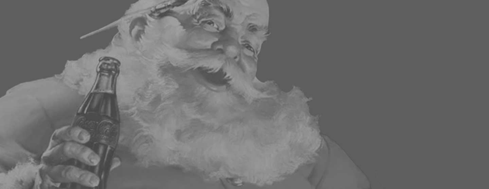
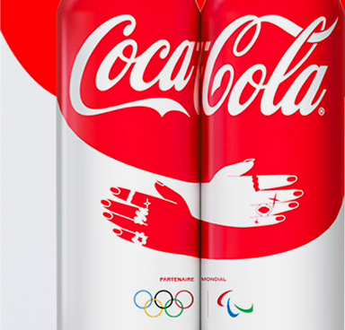

Le più belle
campagne di sempre
Coca-Cola cambia
la comunicazione.
Le campagne di Coca-Cola si distinguono per la loro capacità di andare oltre la semplice promozione del prodotto, costruendo nel tempo un vero e proprio immaginario collettivo di emozioni, valori e rituali condivisi.
Storie di marketing...
Il loro successo si basa su un marketing emozionale autentico, che non utilizza le emozioni come semplice strategia persuasiva, ma le collega a valori universali come la pace, l’inclusione e la condivisione. Campagne iconiche come I'd Like to Buy the World a Coke, Share a Coke o Holidays Are Coming dimostrano come il brand sia riuscito a intercettare bisogni emotivi e culturali reali, trasformandoli in narrazioni semplici ma potenti. In questi casi, lo storytelling parte spesso da situazioni concrete e quotidiane, per poi aprirsi a un linguaggio universale capace di superare barriere culturali e generazionali. Un altro elemento chiave è il ruolo attivo del consumatore, che nelle campagne Coca-Cola non è più spettatore ma co-protagonista.
Attraverso la personalizzazione, i rituali e le esperienze condivise, il pubblico viene coinvolto direttamente, diventando parte integrante della comunicazione. Allo stesso tempo, il brand riesce a innovare continuamente senza perdere coerenza, mantenendo sempre riconoscibile la propria identità. Questo equilibrio tracambiamento e continuità, unito alla capacità di parlare alle persone prima ancora che ai consumatori, ha reso le campagne Coca-Cola memorabili e durature nel tempo. In definitiva, il marketing del brand dimostra che il successo non deriva solo dalla vendita di un prodotto, ma dalla capacità di creare connessioni profonde, esperienze significative e un legame emotivo stabile con il pubblico.

Sponsorizzazioni
Scopri tutte le partnership che la Coca-Cola Company intraprende annualmente. La Fondazione Coca-Cola accetta proposte per una varietà di iniziative, programmi ed eventi; non solo è la fan numero uno dello sport, ma della socializzazione in generale. Tutte le richieste di supporto alla comunità sotto forma di sponsorizzazioni per la considerazione da parte di The Coca-Cola Company, della Fondazione Coca-Cola o di una delle sue fondazioni regionali affiliate devono essere presentate tramite il sistema di candidatura online, che può essere reperito tramite il loro sito web.
scopri di più